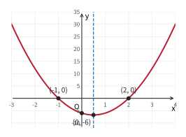
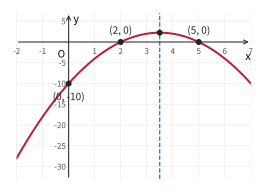
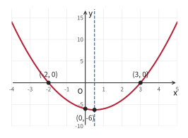

別冊練習問題 6 の解答 x軸との交点から2次関数を決める
(1) 放物線が \(x\) 軸と \((-1,0),\ (2,0)\) で交わり、点 \((0,-6)\) を通るとき、この放物線の方程式を \(y=ax^2+bx+c\) の形で求めよ。
\(x\) 軸との交点を文字で
2点 \((-1,0),(2,0)\) を通るので \(y=a(x+1)(x-2)\) とおける。

もう1点を代入
\((0,-6)\) を通るので
\[-6=a(1)(-2)\ \Rightarrow\ a=3\]展開
かっこの中を先に展開してから、全体にかける。
\[(x+1)(x-2)=x^2-x-2\]\[y=3(x^2-x-2)=3 x^{2} - 3 x - 6\]【答案】
\[y=3 x^{2} - 3 x - 6\]答
(2) 放物線が \(x\) 軸と \((2,0),\ (5,0)\) で交わり、点 \((0,-10)\) を通るとき、この放物線の方程式を \(y=ax^2+bx+c\) の形で求めよ。
\(x\) 軸との交点を文字で
2点 \((2,0),(5,0)\) を通るので \(y=a(x-2)(x-5)\) とおける。

もう1点を代入
\((0,-10)\) を通るので
\[-10=a(-2)(-5)\ \Rightarrow\ a=-1\]展開
かっこの中を先に展開してから、全体にかける。
\[(x-2)(x-5)=x^2-7x+10\]\[y=-1(x^2-7x+10)=- x^{2} + 7 x - 10\]【答案】
\[y=- x^{2} + 7 x - 10\]答
(3) 放物線が \(x\) 軸と \((-2,0),\ (3,0)\) で交わり、点 \((0,-6)\) を通るとき、この放物線の方程式を \(y=ax^2+bx+c\) の形で求めよ。
\(x\) 軸との交点を文字で
2点 \((-2,0),(3,0)\) を通るので \(y=a(x+2)(x-3)\) とおける。

もう1点を代入
\((0,-6)\) を通るので
\[-6=a(2)(-3)\ \Rightarrow\ a=1\]展開
かっこの中を先に展開してから、全体にかける。
\[(x+2)(x-3)=x^2-x-6\]\[y=1(x^2-x-6)=x^{2} - x - 6\]【答案】
\[y=x^{2} - x - 6\]答